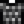

Huevas envejecidas
Ir a la navegación
Ir a la búsqueda
| Huevas envejecidas | |||||||
| Huevos de pez envejecidos en sal para potenciar el sabor. | |||||||
| Información | |||||||
| Origen | Productos artesanales | ||||||
| Energía / Salud |
|
||||||
|
|||||||
| Productos Artesanales | |||||||
| Máquina | Envasadora | ||||||
| Tiempo de artesanía | |||||||
| Ingredientes | |||||||
Las Huevas envejecidas son un Producto artesanal hecho desde la Envasadora usando cualquier tipo de Huevas a excepción de las huevas de esturión. El precio de venta es el doble que el de las Huevas sin procesar. La salud y la energía recuperadas por comer huevas envejecidas es el mismo para todas las huevas envejecidas.
Usar Huevas de Esturión en una envasadora produce Caviar en lugar de huevas envejecidas.
Regalos
| Reacciones de Aldeanos
| |
|---|---|
| Le gusta | |
| Odia | |
Lotes
Las huevas envejecidas no se usan en ningún lote.
Sastrería
Huevas envejecidas se usa en el carrete de la máquina de coser para crear Globby Shirt. 
Misiones
No se usa en ninguna misión.
Historial
- 1.4: Introducido.